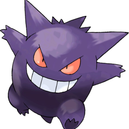
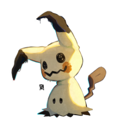
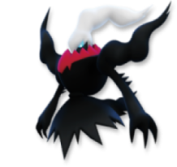
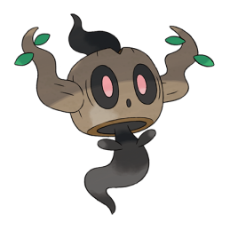

-
Gengar
HP 110
Descrição
Gengar, um Pokémon que espreita nas sombras, é um mestre dos ataques-surpresa. Ele consegue aparecer sorrateiramente por trás dos oponentes sem dar um pio.
-
Mimikyu
HP 70
Descrição
Mimikyu é um pequeno Pokémon cujo o corpo esta quase todo coberto por um saco, seus pequenos olhos negros podem ser vistos pelos buracos no corpo do disfarse e parte do seu corpo escuro pode ser visto na parte inferior
-
Darkrai
HP 180
Descrição
Darkrai é um pokémon tipo Noturno, um dos pokémons lendários da região de Sinnoh. Ele é o Pokémon pesadelo, ao contrário de Cresselia, o Pokémon sonho. Foi o primeiro lendário de Sinnoh á ser revelado, em Fevereiro do ano de 2007, e é o membro da Dupla Lunar, junto com Cresselia.
-
Phantump
HP 60
Descrição
Phantump, o Pokémon cepo, ele é do tipo fantasma e grama. Esse Pokémon e a anti-evolução de Trevenant que também pertence a região de Kalos. Ele pode ser encontrado em florestas escuras e assustadoras.